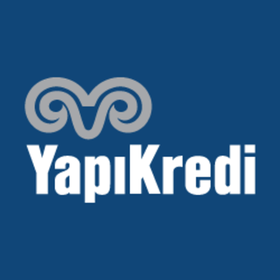

Hayrettin BAŞARANER
Dokuz Eylül Üniversitesi, Buca/İzmir
Tel: +90 (541) 739 9443
Email: hbasaraner@gmail.com
Website: http://hbsrnr.github.io
Dokuz Eylül Üniversitesi, Bilgisayar Bilimleri mezunuyum. Bilişim/Yazılım sektöründe
aktif iş arayışındayım.
GitHub sayfama buraya tıklayarak ulaşabilirsiniz.
- Kişisel Bilgiler
-
Cinsiyet: Erkek
Doğum Tarihi: 06/07/1995
Medeni Durum: Bekar
Uyruk: Türkiye Cumhuriyeti
Sürücü Belgesi: B
Askerlik Durumu: Tecilli (31/12/2020)
- Eğitim
-
Dokuz Eylül Üniversitesi, Fen Fakültesi
Eylül, 2013 - Temmuz, 2019
Bilgisayar Bilimleri - 2,67/4
Gazi Ömer Bey Anadolu Lisesi
Eylül, 2009 - Haziran, 2013
Matematik/Fen - 75,73/100
- İş Deneyimi
-
Doruk Yazılım Proje ve Danışmanlık
Stajyer | Nisan, 2018 - Temmuz, 2018
- Müşterilere NETSİS desteği sağlandı.
- NETSİS fatura/rapor sonuçları için SQL View’ları hazırlandı.
- NETSİS ile entegre çalışabilecek VBA macro, C# Form Application yazıldı.
- Bilgisayar Bilgisi
-
Programlama Dilleri ve Teknolojiler
- C
- C#
- Python
- Javascript
- SQL
- HTML
- CSS
- Git
Yazılımlar
- Microsoft Office (Word, Powerpoint, Excel, Access)
- MATLAB
- IBM CPLEX
- Visual Studio & Visual Studio Code
- PyCharm
- Kurs/Sertifika Bilgileri
-
ICT Professional Foundation Course
Ericsson EMEA | Mart, 2018
 Temel Bankacılık ve Bilişim Teknolojileri Sertifikası
Yapı Kredi Bankacılık Akademisi | Mart, 2018
- Yabancı Dil Bilgisi
-
İngilizce
Okuma: İyi / Yazma: İyi / Konuşma: Orta
(78/100, Dokuz Eylül Üniversitesi, YDY Yeterlilik Sınavı, 2014)